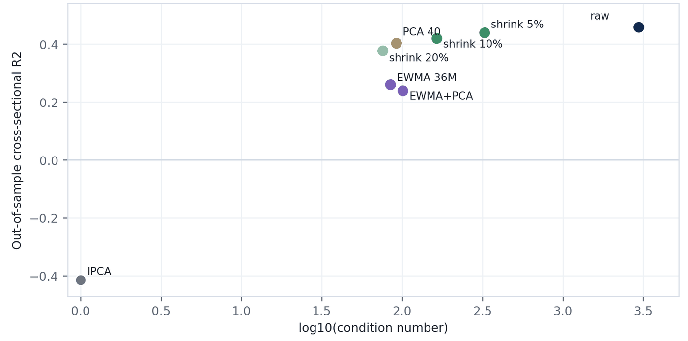

如何构建特征尺子
已实测 · 项目 · 研究证据 · 2026 年 6 月 · 资料来源：报告 Geometry Construction for Statistical Factor Models（2026 年 6 月 27 日） · 全部项目
我做了什么
- 一组对照比较：估计方法不变，只改变特征尺子（格拉姆度量）的构建方式，共七种：原始平均；收缩 5%、10% 或 20%；只保留变动最大的 40 个方向；36 个月的指数加权移动平均（EWMA）；EWMA 之后再只保留这 40 个方向。
- 对每种构建方式在 171 个滚动窗口上做压力测试。
- 同样的构建方法族和同类检验，也写进了我的 NA-IPCA 工具包中的
gcde（收缩、低秩和指数加权等方法族；FAIL_NOT_SPD等校验标签）。
对投研团队的价值 凡是在滚动窗口中估计大型协方差矩阵或二阶矩矩阵，都会遇到这个问题：原始估计保留的结构最多，但在这里的 171 个窗口中有 10 个无法求逆，而每种稳定化版本都可以求逆。在这一设计中，稳定化不改变拟合，只改变拟合在因子与截距之间的划分；它对投资组合的影响在《特征几何》中检验，那里各种尺子的排序并不稳健。
技能与工具 收缩与特征值过滤 EWMA 估计 条件数诊断 滚动压力测试
阅读提示。 以下是来自一份工作报告的描述性结果，并非出自已发表的论文；报告自己说明这些排序只是初步结果，也没有认定任何一种构建方式已可直接投入生产。设计与“为什么尺子很重要”一页中的固定窗口设计相同：定价相关的几列（包括预测 R²）不含截距（本模型中没有被任何因子解释的那部分预期收益）。报告把更高的横截面 R² 解读为定价改善，本页则把它读作拆分方式的不同。《特征几何》发现，在其组合检验中各尺子的排序并不稳健；各篇论文也都没有认定哪一把尺子最好。
背景
使用特征尺子（格拉姆度量）的模型必须先把它估计出来：在一个估计窗口内，对各特征两两乘积在股票之间取平均。直接取原始平均，能保留数据中的重叠结构，但数值上可能不稳定，因为少数几个方向的变动远大于其他方向。条件数衡量的正是这一点：用变动最大的方向上的变动，除以变动最小的方向上的变动；比值为 1，表示所有方向同样大。风险管理团队通常都会先稳定这类矩阵，例如收缩、只保留变动最大的若干个方向，或给近期月份更高的权重。这份报告保持估计方法不变，只改变特征尺子的构建方式，共七种版本：原始平均；向重新缩放的普通尺子（欧氏度量）收缩 5%、10% 或 20%；保留变动最大的 40 个方向、其余方向设一个小的下限；36 个月的指数加权移动平均（EWMA）；以及 EWMA 之后再只保留变动最大的 40 个方向。基准是使用普通尺子的工具化主成分分析（IPCA），一种由特征决定股票因子暴露（股票在某个特征方向上的得分，或随某个因子变动的强弱）的标准因子模型。
图表 1：横截面 R² 与数值稳定性的取舍

（在新标签页打开大图）要点。 原始平均的样本外横截面 R² 最高（0.458），但条件数也最高（2,963）。收缩 5% 后仍有 0.440，条件数降到 325.5；36 个月 EWMA 则降到 0.259。由于这一指标不含截距，数值更高只说明更多预期收益被归于因子，并不说明模型拟合得更好（见图表 2）。这是保留数据重叠结构与数值稳定之间的取舍。
图表 2：每个版本都在重新拆分同一个拟合
| 构建方式 | 横截面 R² | 预测 R² | 时间序列 R² | 总 R² | 条件数 |
|---|---|---|---|---|---|
| IPCA（普通尺子） | −0.414 | −0.033 | 0.679 | 0.862 | 1.0 |
| 原始平均 | 0.458 | 0.034 | 0.679 | 0.862 | 2,963.0 |
| 收缩 5% | 0.440 | 0.033 | 0.679 | 0.862 | 325.5 |
| 收缩 10% | 0.420 | 0.031 | 0.679 | 0.862 | 164.1 |
| 收缩 20% | 0.376 | 0.028 | 0.679 | 0.862 | 75.8 |
| 40 个方向 | 0.403 | 0.030 | 0.679 | 0.862 | 91.9 |
| EWMA，36 个月 | 0.259 | 0.019 | 0.679 | 0.862 | 84.5 |
| EWMA + 40 个方向 | 0.240 | 0.018 | 0.679 | 0.862 | 100.9 |
样本外，三个潜在因子；各行均已收敛。资料来源：报告 Geometry Construction for Statistical Factor Models，第 3 页（该页另列样本内结果与定价误差）。
要点。 八行的时间序列 R²（0.679）与总 R²（0.862）完全相同。尺子的每个版本都把同一个拟合拆分给因子与截距，只是拆法不同；随之变化的只有依赖拆分方式的定价指标（包括预测 R²）。
图表 3：原始的滚动尺子可能失效
| 构建方式 | 条件数中位数 | 有限值中的最大值 | 无法求逆的窗口数 |
|---|---|---|---|
| 普通尺子（单位矩阵） | 1.0 | 1.0 | 0 |
| 原始平均 | 4,031.2 | 13,615.0 | 10 |
| 收缩 5% | 377.6 | 522.4 | 0 |
| 收缩 10% | 187.9 | 264.8 | 0 |
| 收缩 20% | 86.2 | 122.4 | 0 |
| 40 个方向 | 102.1 | 146.5 | 0 |
| EWMA，36 个月 | 86.5 | 122.6 | 0 |
| EWMA + 40 个方向 | 102.5 | 146.8 | 0 |
每种构建方式在 171 个滚动窗口上逐一重新估计；报告没有说明窗口长度和起止日期。无法求逆的窗口，其条件数为无穷大。资料来源：报告 Geometry Construction for Statistical Factor Models，第 4 页。
要点。 逐个窗口重新估计时，原始平均的条件数中位数为 4,031，最高达 13,615，171 个窗口中有 10 个根本无法求逆。所有稳定化版本的条件数始终低于 523。报告给出的实务准则是：原始平均若不加稳定化处理（报告称之为安全层），就不要直接使用（第 4 页）。
延伸阅读
- 《特征几何》每月重新估计特征尺子，比较三个版本（半衰期 60 个月的 EWMA、等权 120 个月、滚动 60 个月），并把每个版本一直追踪到投资组合。
- 《特征空间度量》把尺子本身的估计误差计入置信区间。
- 相关项目：NA-IPCA 工具包（这些构建方式与检验的软件实现）· 为什么尺子很重要。